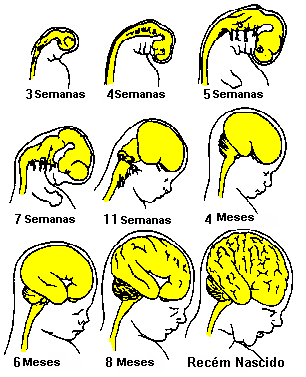
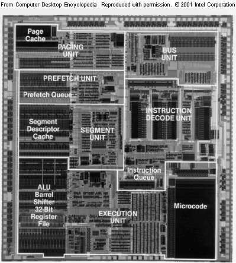
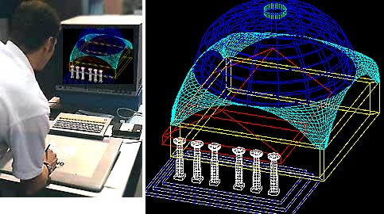
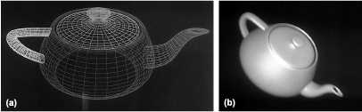

VIII A futura evolução do cérebro
É típico do futuro ser perigoso... Os principais avanços da civilização são
processos, todos eles, que destroem as sociedades em que
ocorrem.
Alfred North Whitehead
Adventures in ideas
A voz do intelecto é suave, mas não descansa até ter ganho um ouvinte.
Em última análise, após inumeráveis derrotas, ela vence.
Este é um dos
poucos pontos em relação aos quais podemos ser
otimistas no tocante ao
futuro da humanidade.
Sigmund Freud
O futuro de uma ilusão
O espírito de um homem é capaz de tudo – porque tudo está nele, todo o
passado e todo o futuro.
Joseph Conrad
Heart of darkness
O cérebro humano parece permanecer em inquieta trégua, com eventuais escaramuças e raras batalhas. A existência de componentes cerebrais com predisposição a certos comportamentos não representa um convite ao fatalismo ou ao desespero; temos considerável controle sobre a importância relativa de cada componente. A anatomia não quer dizer destino, mas também não é irrelevante. Pelo menos algumas doenças mentais podem ser compreendidas em termos de um conflito entre facções neurais em disputa. A repressão mútua entre os componentes se dá em muitas direções. Já abordamos a repressão límbica e neocortical do complexo-R*, mas, através da sociedade, pode também haver repressão do complexo-R* pelo neocórtex* e repressão de um hemisfério pelo outro.
Em geral, as sociedades humanas não são dadas a inovações. São hierárquicas e ritualísticas. Sugestões de mudanças são recebidas com suspeita: implicam uma desagradável variação futura do ritual e da hierarquia: a troca de um conjunto de rituais por outro, ou talvez por uma sociedade menos estruturada, com menos rituais. Mas, mesmo assim, às vezes a sociedade precisa modificar-se. “Os dogmas do silencioso passado já não convêm ao tempestuoso presente” — era assim que Abraham Lincoln expressava essa verdade. Grande parte das dificuldades encontradas ao se tentar reestruturar a sociedade americana e outras sociedades advém da resistência oferecida por grupos com interesse no status quo. É possível que mudanças importantes façam descer muitos degraus aqueles que agora ocupam elevadas posições hierárquicas. Isso parece indesejável, e a resistência sobrevém.
Contudo, percebe-se certa modificação (e eu diria até uma modificação considerável) na sociedade ocidental — não o suficiente, é claro, porém muito mais do que em quase todas as outras sociedades. As culturas mais antigas e mais estáticas oferecem muito mais resistência a transformações. No livro The Forest People, de Colin Turnbull, há uma pungente descrição de uma menina pigmeia aleijada que foi presenteada por antropólogos visitantes com uma fabulosa novidade tecnológica, uma muleta. Apesar de ter aliviado sobremaneira o sofrimento da menina, os adultos, inclusive seus pais, não mostraram o menor interesse pelo invento29 Existem muitos outros casos de intolerância a novidades nas sociedades tradicionais; e diversos exemplos pertinentes poderiam ser extraídos das vidas de homens como Leonardo da Vinci, Galileu, Desiderius Erasmus, Charles Darwin ou Sigmund Freud.
O tradicionalismo de sociedades em estado estático geralmente é adaptativo: as formas culturais têm evoluí penosamente no decorrer de muitas gerações e reconhecidamente servem bem. À semelhança das mutações, qualquer mudança aleatória tende a servir menos. Mas, também como as mutações, as mudanças são necessárias caso se queira atingir uma adaptação a novas circunstâncias ambien-tais. A tensão entre essas duas tendências caracteriza grande parte do conflito político de nossa era. Em uma época marcada por um ambiente social e físico externo rapidamente mutável — como é a nossa —, a acomodação à mudança e sua aceitação são adaptativas; nas sociedades dominadas pelos ambientes estáticos, isso não ocorre. Os estilos de vida caçador-coletor serviram bem ao homem na maior parte de sua história, e eu acho que há indícios insofismáveis de que, de certa forma, fomos moldados pela evolução para tal cultura; quando abandonamos a vida de caçador-coletor, abandonamos também a infância de nossa espécie. Culturas à base de caça e coleta, ou de elevada tecnologia, são produtos do neocórtex*. Estamos agora irreversívelmente encaminhados para a última trilha. Mas vai levar algum tempo até nos acostumarmos a isso.
[Imagem: Caçadores do Kalahari. Esse estilo de vida, que foi característico de nossa espécie durante milhões de anos, agora está quase extinto.]
[Imagem: O homem pondera sobre si mesmo. De autoria de Vesalius, o criador da anatomia moderna.]
A Grã-Bretanha produziu uma série de cientistas e estudiosos multidisciplinares admiravelmente dotados que são por vezes classificados como polímatas. Esse grupo abrange, nos últimos tempos, Bertrand Russell, A. N. Whitehead, J. B. S. Haldane, J. D. Bernal e Jacob Bronowski. Russell comentou que o desenvolvimento de indivíduos assim dotados exigiu uma infância na qual havia pouca ou nenhuma pressão para a submissão, uma época na qual a criança podia desenvolver e perseguir seus próprios interesses, não importa quão insólitos ou bizarros fossem. Em virtude de fortes pressões para a submissão social, tanto por parte do governo quanto por grupos minoritários nos Estados Unidos — e até mais na União Soviética, no Japão e na República Popular da China —, penso que esses países estão produzindo proporcionalmente menos polímatas. Acho também que existem indícios de que a Grã-Bretanha se encontra em franco declínio quanto a esse aspecto.
Principalmente hoje, quando o homem se depara com problemas tão complexos e difíceis, o desenvolvimento de um pensamento abrangente e poderoso constitui uma necessidade desesperada. Deve haver um meio, compatível com os ideais democráticos apoiados por todos esses países, de estimular, em um contexto humanitário e carinhoso, o desenvolvimento intelectual de jovens especialmente promissores. Em vez disso, encontramos nos sistemas de instrução e exame da maioria desses países uma ritualização quase reptiliana do processo educativo. Eu às vezes me pergunto se o apelo ao sexo e à agressão na televisão e nos filmes contemporâneos não reflete o fato de que o complexo-R* é bem desenvolvido em todos nós, enquanto muitas funções neocorticais são, em parte pelo caráter repressivo das escolas e das sociedades, mais raramente expressas, menos comuns e insuficientemente valorizadas.
Como consequência das imensas transformações sociais e tecnológicas dos últimos séculos, o mundo não anda funcionando bem. Não vivemos em sociedades tradicionais e estáticas. Não obstante, nossos governos, resistindo às transformações, agem como se assim vivêssemos. A menos que nos destruamos completamente, o futuro pertence às sociedades que, não ignorando as partes reptilianas e mamíferas de nosso ser, permitam o florescimento dos componentes caracteristicamente humanos de nossa natureza; às sociedades que incentivem a diversidade e não a submissão; às sociedades sequiosas por investir recursos em uma série de experiências sociais, políticas, econômicas e culturais e preparadas para sacrificar as vantagens a curto prazo pelo benefício a longo prazo; às sociedades que tratem as novas ideias como caminhos delicados, frágeis e imensamente valiosos para o futuro.

[Imagem: Desenvolvimento embrionário do cérebro humano. O cérebro até sete semanas mostra notável semelhança com o cérebro de peixes e anfíbios.
Uma melhor compreensão do cérebro pode também um dia repousar sobre temas tão controvertidos quanto a definição de morte e a aceitação do aborto. A moral do Ocidente parece ser a de que é permissível, por uma boa causa, matar primatas não-humanos e certamente outros mamíferos; mas não é permissível (aos indivíduos) matar seres humanos sob circunstâncias semelhantes. A implicação lógica é que são as qualidades caracteristicamente humanas que fazem a diferença. Da mesma forma, se consideráveis partes do neocórtex* estão funcionando, o paciente comatoso pode ser considerado vivo no sentido humano, mesmo que haja prejuízo maior das outras funções físicas e neurológicas. Por outro lado, um paciente vivo, mas sem qualquer sinal de atividade neocortical (inclusive as atividades neocorticais durante o sono), pode ser descrito, no sentido humano, como morto. Em muitos desses casos, o neocórtex* interrompeu sua atividade irreversivelmente, mas o sistema límbico*, o complexo-R* e estruturas inferiores do tronco cerebral ainda estão funcionando, não sendo prejudicadas as funções fundamentais, quais sejam a respiração e a circulação sanguínea. Penso que seja necessário mais estudo a respeito da fisiologia do cérebro humano até que uma definição legal bem-fundamentada de morte possa ser amplamente aceita. O caminho para tal definição provavelmente nos impelirá através de considerações sobre o neocórtex* em contraposição aos outros componentes do cérebro. Semelhantes ideias poderiam ajudar a resolver um grande debate sobre o aborto surgido nos Estados Unidos no final da década de 70 — uma controvérsia caracterizada em ambos os lados por extrema veemência e uma negação de qualquer mérito aos pontos de vista opostos. Em um dos extremos encontra-se a posição de que a mulher tem o direito inato do “comando de seu próprio corpo”, que abrange, afirma-se, a morte de um feto sob diversas alegações, inclusive a falta de inclinação psicológica e a incapacidade econômica de criar um filho. No outro extremo está a existência de um “direito à vida”, a afirmação de que matar mesmo que seja um zigoto, o óvulo fertilizado antes da primeira divisão embrionária, é assassinato porque o zigoto tem o “potencial” de se tornar um ser humano. Eu concordo que, em um tema tão carregado de emoção, qualquer proposta não receba os aplausos dos partidários de ambos os extremos, e às vezes nossos corações e mentes nos levam a conclusões diferentes. No entanto, à luz de alguns conceitos expostos em capítulos anteriores, gostaria de oferecer pelo menos uma tentativa de solução razoável.
Não há dúvida de que o aborto legalizado evita a tragédia e a carnificina do aborto ilegal e incompetente, e que, em uma civilização cuja própria perpetuação está ameaçada pelo espectro do crescimento populacional desenfreado, a ampla disponibilidade de abortos médicos pode responder a uma necessidade social importante. O infanticídio, porém, resolveria ambos os problemas e tem sido larga-mente utilizado por muitas comunidades humanas, inclusive segmentos da clássica civilização grega, tão aceita como nosso antecedente cultural. Continua sendo praticado hoje em dia: em muitas partes do mundo, um em cada quatro recém-nascidos não sobrevive ao primeiro ano de vida. Contudo, de acordo com nossas leis e costumes, o infanticídio é crime. Considerando-se que uma criança nascida prematuramente no sétimo mês de gestação não difere basicamente de um feto in utero no sétimo mês, parece-me que o aborto, pelo menos no último trimestre, em muito se aproxima do assassinato. As alegações de que o feto no terceiro trimestre ainda não está respirando me causam espécie: será permissível cometer infanticídio após o nascimento se o cordão umbilical ainda não foi seccionado, ou se a criança ainda não respirou? Da mesma forma, se sou psicologicamente despreparado para conviver com um estranho — no acampamento do exército ou no dormitório do colégio —, não tenho por conseguinte o direito de matá-lo, e meu aborrecimento pelo uso dos impostos que pago não me reserva o direito de exterminar os recebe-dores desses impostos. O ponto de vista das liberdades civis é frequentemente alegado em tais questões. Por que, indaga-se às vezes, as crenças dos outros sobre esse assunto devem estender-se a mim? Mas aqueles que não apoiam pessoalmente a proibição convencional contra o crime são enquadrados por nossa sociedade no código criminal.
No extremo oposto da discussão, a expressão “direito à vida” constitui excelente exemplo de expressão de efeito, destinada a inflamar e não a iluminar. Não existe direito à vida em nenhuma sociedade da Terra atualmente, e nunca houve em tempo algum (com algumas raras exceções, como os jainistas, da Índia). Criamos animais em fazendas para devorá-los, destruímos florestas, poluímos rios e lagos até que os peixes lá não possam viver, caçamos antílopes e cervos por esporte, leopardos para lhes tirar o couro e baleias para fazer comida de cachorro; capturamos golfinhos, arfando e gemendo, em grandes redes e matamos a estocadas os filhotes de foca para “controle populacional”. Todos esses animais e vegetais são tão vivos quanto nós. O que se protege em algumas sociedades humanas não é a vida em si, mas a vida humana. Mesmo com essa proteção, porém, nós encaramos os efeitos das guerras “modernas” sobre as populações civis como um tributo tão terrível que temos medo, a maioria de nós, de pensar nisso de modo mais profundo. Frequentemente tais assassinatos em massa são justificados por redefinições raciais ou nacionalistas de nossos adversários como a eliminação de seres menos que humanos.
Da mesma forma, o argumento do “potencial” de se tornar humano parece-me particularmente fraco. Qualquer óvulo humano ou esperma, sob circunstâncias adequadas, tem o potencial de se tornar humano. Contudo, a masturbação masculina e as poluções noturnas são em geral consideradas atos naturais, não estando sujeitas a punição criminal. Em uma única ejaculação são lançados espermatozoides em número suficiente para gerar centenas de milhões de seres humanos. Além disso, é possível que, em futuro não muito remoto, sejamos capazes de fazer um clone de um ser humano integral a partir de uma única célula retirada de qualquer parte do corpo do doador. Nesse caso, qualquer célula de meu corpo tem a potencialidade de se tornar um ser humano se adequadamente preservada até a ocasião da tecnologia prática de clones. Estarei cometendo assassinato em massa se machucar meu dedo e perder uma gota de sangue?
Os temas são inquestionavelmente complexos. É lógico que a solução deve envolver um consenso entre numerosos valores importantes, mas conflitantes. A questão prática fundamental é determinar quando o feto se torna humano. Isso, por sua vez, depende do que consideramos humano. Certamente que não é ter a forma humana, porque um artefato de matéria orgânica que se assemelhasse a um ser humano, embora construído com essa finalidade, certamente não seria considerado humano. Da mesma forma, um ser extraterrestre inteligente que não se assemelhasse a um ser humano, mas que possuísse atributos éticos, intelectuais e artísticos superiores aos nossos certamente estaria protegido pela proibição do assassinato. Não é nosso aspecto que especifica o que é a humanidade, mas aquilo que somos. O motivo pelo qual o assassinato de seres humanos é proibido deve repousar em alguma qualidade humana, uma qualidade que prezamos em particular, que poucos ou nenhum outro organismo da Terra possuem. Não pode ser a capacidade de sentir dor ou emoções profundas, pois estas certamente são comuns a muitos dos animais que deliberadamente dilaceramos.
Essa qualidade essencialmente humana, creio, só pode ser nossa inteligência. Nesse caso, a particular santidade da vida pode ser identificada com o desenvolvimento e o funcionamento do neocórtex*. Não podemos exigir seu desenvolvimento integral, pois isso só ocorre muitos anos após o nascimento. Mas talvez possamos estabelecer a transição para a humanidade na ocasião em que se inicia a atividade neocortical, determinada pelo eletrencefalograma do feto. Algumas perspectivas da época na qual o cérebro desenvolve um caráter distintamente humano surgem a partir das observações embriológicas mais simples. Muito pouco trabalho foi realizado neste campo até o momento, e me parece que tal investigação em muito contribuiria para se atingir um acordo aceitável no debate sobre o aborto. Não há dúvida de que haveria uma variação de feto a feto quanto à ocasião de início dos primeiros sinais neocorticais ao EEG, e uma definição legal do início da vida caracteristicamente humana deve ser estipulada de modo conservador — ou seja, de acordo com o feto mais jovem que exibe tal atividade. Talvez a transição coincidisse com o final do primeiro trimestre ou o início do segundo trimestre da gestação. (Aqui estamos falando do que, em uma sociedade racional, deve ser proibido por lei; qualquer pessoa que considere o aborto de um feto mais jovem como crime não deve ser obrigada a realizar ou aceitar tal ato.)
Uma aplicação coerente dessas ideias deve, contudo, evitar o chauvinismo hu-mano. Se existem outros organismos que compartilham da inteligência de um ser humano um tanto retardado, mas completamente desenvolvido, devem pelo menos receber a mesma proteção contra o assassinato que nós pretendemos estender aos seres humanos no final de sua vida intra-uterina. Uma vez que os indícios da inteligência nos golfinhos, nas baleias e nos antropoides são agora pelo menos convincentes, qualquer posição moral coerente a respeito do aborto deve, segundo minha opinião, abranger firmes críticas contra o massacre gratuito desses animais. Mas a chave definitiva para a solução da controvérsia sobre o aborto seria a pesquisa da atividade neocortical antes do parto.
Que dizer da evolução futura do cérebro humano? Existe um conjunto amplo e crescente de indícios de que muitas formas de doença mental resultam de disfunções químicas ou das ligações no cérebro. Como muitas doenças mentais possuem os mesmos sintomas, podem ter origem nas mesmas disfunções e devem ser suscetíveis aos mesmos tratamentos.
O neurologista inglês Hughlings Jackson, um pioneiro do século XIX, observou: “Conhece os sonhos e conhecerás a insanidade” . Os indivíduos intensamente privados de sonhos frequentemente têm alucinações durante o dia. A esquizofrenia também se acompanha amiúde de distúrbios do sono noturno, porém não se sabe se isso representa causa ou consequência. Um dos aspectos mais notáveis da esquizofrenia é o estado de infelicidade e desespero em que geralmente vivem os que dela sofrem. Seria a esquizofrenia o que ocorre quando os dragões não mais se encontram acorrentados à noite, quando rompem os grilhões do hemisfério esquerdo e eclodem à luz do dia? Outras doenças talvez resultem de um distúrbio de função do hemisfério direito: os obsessivo-compulsivos, por exemplo, muito raramente apresentam repentes intuitivos.
Em meados da década de 60, Lester Grinspoon e seus colaboradores, na Facul-dade de Medicina de Harvard, realizaram uma série de experiências controladas sobre o valor relativo das diversas técnicas terapêuticas para o tratamento da esquizofrenia. Eles são psiquiatras, e, se tivessem alguma tendência, essa seria na direção das técnicas verbais, e não das farmacológicas. Contudo, para sua surpre-sa, descobriram que a tioridazina (um dos medicamentos de um grupo de drogas antipsicóticas de eficácia aproximadamente igual, conhecido como fenotiazinas), um tranquilizante recentemente criado, era incomparavelmente mais eficaz no controle, se não na cura da doença; na realidade, descobriram que a tioridazina pura era pelo menos tão eficaz — no consenso dos pacientes, de seus parentes e dos psiquiatras — quanto a tioridazina aliada à psicoterapia. A integridade dos experimentadores em face desse inesperado resultado é de pasmar. (É difícil conceber qualquer experiência que convencesse os partidários de diversas filosofias políticas ou religiosas da superioridade de uma doutrina antagônica.)
Pesquisas recentes mostram que endorfinas*, pequenas moléculas proteicas naturais dos cérebros de ratos e outros mamíferos, podem provocar nesses animais acentuada rigidez muscular e estupor que lembram a catatonia esquizofrênica. A causa molecular ou neurológica da esquizofrenia — outrora responsável por um em cada três leitos hospitalares ocupados nos Estados Unidos – ainda é desconhecida; mas não é pouco plausivel que algum dia cheguemos a descobrir precisamente o local ou o conjunto de produtos neuroquímicos no cérebro que determinam essa disfunção.
Uma curiosa questão ética surge com as experiências de Grinspoon e colaboradores. Os tranquilizantes agora são tão eficazes no tratamento da esquizofrenia que é amplamente antiético privar o paciente desses medicamentos. A implicação é que as experiências que demonstram a eficácia dos tranquilizantes não podem ser repetidas. É considerada uma crueldade desnecessária negar ao paciente o melhor tratamento disponível para sua doença. Consequentemente, não se pode mais manter um grupo de controle de esquizofrênicos sem medicação tranquilizante. Se experiências críticas na quimioterapia das disfunções cerebrais só podem ser realizadas uma vez, elas têm de ser realmente muito bem feitas.
Um exemplo ainda mais marcante de tal quimioterapia é o uso de carbonato de lítio no tratamento dos maníacos-depressivos. A ingestão de doses cuidadosamente controladas de lítio, o metal mais leve e mais simples, produz surpreendentes melhoras — novamente conforme a perspectiva dos pacientes e de outros — nessa terrível doença. O motivo pelo qual um tratamento tão simples é tão benéfico, mais provavelmente, relaciona-se à química enzimática do cérebro.
Uma doença mental muito estranha é a doença de Gilles de la Tourette (assim denominada, como sempre, em homenagem ao médico que primeiramente a descreveu, e não ao portador mais célebre do mal). Um dos muitos distúrbios motores e da fala que se encontram entre os sintomas dessa doença é uma notável compulsão a proferir — no idioma em que o paciente tem maior fluência — uma ininterrupta sequência de obscenidades e impropérios. Os médicos descrevem a identificação dessa doença como um “diagnóstico de corredor”. O paciente pode controlar-se com grande dificuldade no decorrer de uma curta visita médica; assim que o médico sai do quarto e chega ao corredor, a escatologia desaba como a inundação de uma represa rompida. Existe um lugar no cérebro que forma os “palavrões” (e os antropoides podem possuí-lo).
São muito poucas as palavras que o hemisfério direito pode comandar conve-nientemente — não mais do que “olá”, “até logo” e... algumas obscenidades sele-cionadas. Talvez a doença de Tourette comprometa apenas o hemisfério esquerdo. O antropólogo inglês Bernard Campbell, da Universidade de Cambridge, sugere que o sistema límbico* é muito bem integrado com o hemisfério cerebral direito, o qual, como já vimos, lida melhor com as emoções que o hemisfério esquerdo. Não importa que outras partes estejam comprometidas, as obscenidades levam consigo grande carga emocional. Contudo, a doença de Gilles de la Tourette, complexa como é, parece uma deficiência específica de um transmissor neuroquímico e é aliviada por doses cuidadosamente controladas de haloperidol.
Indícios recentes mostram que hormônios límbicos tais como o HACT e a vasopressina são capazes de melhorar enormemente a capacidade dos animais de reter a memória e relembrar. Esses exemplos e outros semelhantes sugerem, se não a perfeição definitiva do cérebro, pelo menos previsões de substancial melhora — talvez alterando a abundância ou controlando a produção de pequenas proteínas cerebrais. Tais exemplos também aliviam sobremaneira a carga de culpa habitualmente experimentada pelos que sofrem de doença mental, carga essa raramente sentida por vítimas de outras doenças, como o sarampo, por exemplo.
A notável fissurização, as circunvoluções e as dobras corticais do cérebro, assim como o fato de que o cérebro se adapta harmoniosamente ao crânio, constituem claras indicações de quão difícil será acrescentar mais massa cerebral à caixa cra-niana atual. Cérebros maiores com crânios maiores não poderiam ter-se desenvolvido até muito pouco tempo atrás em virtude dos limites impostos pelo tamanho da pelve e do canal de parto. O advento, porém, do parto cesáreo — raramente realizado há 2 000 anos e muito mais frequente hoje em dia ― permite, com efeito, maiores volumes cerebrais. Outra possibilidade é a tecnologia médica suficientemente adiantada para permitir o desenvolvimento a termo de um feto fora do útero. Entretanto, a velocidade da transformação evolutiva é tão lenta que nenhum dos problemas que nos assolam hoje seria superado por aumentos neocorticais importantes e consequentes inteligências superiores. Antes disso, mas não em futuro imediato, é possível que a cirurgia seja capaz de melhorar os componentes do cérebro que consideramos valiosos e inibir ainda mais os componentes que po-dem ser responsáveis por perigos e contradições que pairam sobre a humanidade. Contudo, a complexidade e a redundância da função cerebral tornam impraticável tal sequência de eventos para o futuro próximo, mesmo que isso fosse socialmente desejável. Será mais fácil para o homem construir genes que construir cérebros.
Comenta-se às vezes que essas experiências podem dotar governos inescrupu-losos ― e existem muitos deles — com armas capazes de controlar seus cidadãos ainda mais. Podemos imaginar, por exemplo, um governo que implante centenas de minúsculos eletrodos nos centros do “prazer” e da “dor” dos cérebros de recém-nascidos, eletrodos esses capazes de estimulação por controle remoto — talvez em frequências ou códigos de acesso* conhecidos apenas pelo governo. Quando a criança estiver crescida, o governo pode estimular seus centros de prazer caso tenha realizado, tanto em trabalho como em ideologia, uma aceitável jornada diária; em caso contrário, poderá estimular seus centros de dor. Essa é uma visão de pesadelo, mas não considero que represente um argumento contra experiências a respeito da estimulação elétrica do cérebro. É, em vez disso, um argumento contra a permissão de que o governo controle os hospitais. Qualquer povo que permitir que seu governo implante tais eletrodos já terá perdido a batalha e bem merecerá o que daí surgir. Como em todos os pesadelos tecnológicos, a principal tarefa consiste em prever o que é possível; educar o público quanto ao uso correto e errôneo; e prevenir os abusos oriundos da organização, da burocracia e do governo.
Já existe uma série de psicotrópicos e drogas que alteram o humor e que, em diferentes graus, são perigosos ou benignos (o álcool etílico é o mais amplamente usado e um dos mais perigosos). Aparentemente, atuam em áreas específicas do complexo-R*, do sistema límbico* e do neocórtex*. Se a tendência atual persistir, mesmo sem o incentivo dos governos, as pessoas buscarão a síntese laboratorial caseira e a auto-experiência com essas drogas — uma atividade que representa um pequeno novo passo em direção ao nosso conhecimento do cérebro, seus distúrbios e seus potenciais ocultos.
Há motivos para pensar que muitos alcaloides e outras drogas que afetam o comportamento funcionam por serem quimicamente semelhantes às pequenas proteínas cerebrais naturais, das quais as endorfinas* constituem um exemplo. Muitas dessas pequenas proteínas agem sobre o sistema límbico* e se relacionam com nossos estados emocionais. Agora é possível manufaturar pequenas proteínas constituídas por qualquer sequência específica de aminoácidos. Portanto, em futuro próximo, será sintetizada grande variedade de moléculas capazes de provocar os estados emocionais humanos, inclusive os muito raros. Existem, por exemplo, indícios de que a atropina — um dos componentes mais ativos da cicuta, do digital, da beladona e do estramônio (figueira-do-inferno) — provoca a ilusão de voar; e efetivamente essas plantas parecem conter os principais constituintes de unguentos auto-administrados à mucosa genital por bruxas da Idade Média — as quais, em vez de voarem realmente, como se vangloriavam, faziam uma viagem de atropina. Entretanto, uma vívida alucinação de vôo é uma sensação demasiado específica para ser transmitida por uma molécula relativamente simples. Talvez exista uma variedade de pequenas proteínas que serão sintetizadas e que produzirão estados emocionais de uma espécie jamais experimentada pelos seres humanos. Esse é um dos muitos progressos potenciais a curto prazo na química cerebral que prometem grandes efeitos para o bem ou para o mal, de acordo com o critério daqueles que conduzem, controlam e aplicam essa pesquisa.
Quando deixo meu escritório e entro no meu carro, a menos que faça um esforço de vontade, dirijo-me para casa. Quando saio de casa e entro no carro, a menos que faça semelhante esforço consciente, há uma parte de meu cérebro que engendra as coisas de tal forma que acabo chegando ao escritório. Se eu mudar de casa ou de escritório, após um curto período de aprendizado, os novos locais suplantam os antigos e, seja qual for o mecanismo cerebral que comanda tal comportamento, esse se adapta prontamente às novas coordenadas. Isso em muito se assemelha à autoprogramação de uma parte do cérebro que funciona como um computador digital. A comparação é ainda mais surpreendente quando nos damos conta de que os epilépticos, durante uma convulsão psicomotora, frequentemente realizam uma sequência de atos exatamente iguais, com a única diferença de talvez ultrapassarem mais sinais vermelhos do que eu habitualmente ultrapasso, mas não têm memória consciente de terem praticado essas ações uma vez cessada a crise convulsiva. Esse automatismo é um sintoma típico da epilepsia com foco no lobo temporal; também caracteriza a primeira hora depois que eu acordo. Certamente, nem todo o cérebro funciona como um computador digital simples; a parte que faz a reprogramação, por exemplo, é bastante diferente. Mas existem semelhanças suficientes para sugerir que se pode organizar, de forma construtiva, uma disposição de trabalho compatível entre computadores eletrônicos e pelo menos alguns componentes do cérebro ― em íntima associação neurofisiológica.
O neurofisiologista espanhol José Delgado inventou circuitos que operam por controle remoto através de interação entre eletrodos implantados nos cérebros de chimpanzés e computadores eletrônicos. A comunicação entre o cérebro e o computador é obtida através do rádio. A miniaturização dos computadores eletrônicos atingiu agora uma fase tal que esses circuitos podem ser “compactados” e não exigir uma ligação pelo rádio com um remoto terminal de computador. Por exemplo, é inteiramente possível projetar um circuito auto-suficiente no qual os sinais de convulsão epiléptica iminente sejam reconhecidos e os centros cerebrais implicados sejam automaticamente estimulados a fim de deter ou atenuar o ataque. Ainda não podemos utilizar esse procedimento com segurança, mas isso não tardará muito.
Talvez algum dia seja possível acrescentar uma série de próteses cognitivas e intelectuais ao cérebro — uma espécie de óculos para a mente. lsso obedeceria ao espírito da evolução auditiva e é provavelmente muito mais exequível do que tentar reestruturar o cérebro existente. Talvez um dia implantemos cirurgicamente em nossos cérebros pequenos nódulos substituíveis de computador ou terminais de rádio que nos proporcionem rápido e fluente conhecimento do basco, do urdu, do amárico, do aino, do albanês, do nu, do hopi, do kung ou do delfinês; ou valores numéricos da função gama incompleta e dos polinômios de Tchebichev; ou da história natural do faro dos animais; ou todos os requisitos legais para a posse de ilhas flutuantes; ou a telepatia pelo rádio conectando diversos seres humanos, pelo menos temporariamente, em uma espécie de associação simbiótica anteriormente desconhecida de nossa espécie.
Mas as ampliações reais de nossos cérebros, sobretudo em relação aos aspectos exclusivamente humanos do neocórtex*, já estão em via de ser consumadas. Algumas delas são tão antigas que nos esquecemos de usá-las. Os ambientes didáticos ricos e sem repressão para as crianças representam uma arma educativa notavelmente promissora e bem-sucedida. A linguagem escrita é uma fabulosa invenção que consiste essencialmente em uma máquina simples para o armazenamento e recuperação de informações bastante complexas. A quantidade de informação contida numa grande biblioteca excede sobremaneira a quantidade de informação contida no genoma ou no cérebro humanos. Certamente, a informação não é armazenada com a mesma eficiência que nos sistemas biológicos, mas já é suficientemente compacta, e a criação de microfilmes, microfichas e congêneres melhorou muito as capacidades de armazenamento da informação extra-somática da espécie humana.
A escrita, no entanto, é uma máquina muito simples. Muito mais requintados e infinitamente mais promissores são o armazenamento e processamento de informação extra-somática proporcionados pelo computador eletrônico. Para dar uma ideia do nível de desenvolvimento de tais computadores e de seus programas, basta dizer que hoje eles são capazes de jogar o jogo-da-velha, o xadrez e o jogo de damas, assim como exercer com razoável perícia o ofício de psicoterapeuta. Existe agora um sistema de computador orientado no sentido de transcrever música clássica ou de qualquer natureza na escrita musical convencional. A quantidade de informação arquivada e a velocidade do processamento pelos computadores são naturalmente prodigiosas.
Um programa de psicoterapia não-dirigida desenvolvido por Joseph Weizenbaum, do Instituto de Tecnologia de Massachusetts, é um bom exemplo da utilidade atual dos programas psiquiátricos em computador (que, a propósito, não são de forma alguma os programas mais difíceis e elaborados que existem). Depois da criação do programa psicoterápico, um psiquiatra (humano) foi encarregado de dialogar com o computador psiquiátrico usando letras minúsculas (através do teclado de uma máquina de escrever e de um móvel interativo). As respostas do computador figuram em letras maiúsculas. O intercâmbio pretendia ser heurístico, mas é possível que se tenha tornado incontrolável do lado humano. A conversa começa com o psiquiatra dizendo:
doutor, tenho péssimas notícias VOCÊ DISSE QUE TEM PÉSSIMAS NOTÍCIAS sim, há um programa de computador no instituto de tecnologia de massachusetts que vai nos arruinar POR QUE AFIRMA ISSO eu o vi em ação VOCÊ DISSE QUE O VIU EM AÇÃO é assustador — você precisa vê-lo VOCÊ ACHA QUE DEVO VÊ-LO você me parece deprimido EM SUA FANTASIA TALVEZ NÓS PAREÇAMOS DEPRIMIDOS UM EM RELAÇÃO AO OUTRO é — talvez EU COMPREENDO eu também VOCÊ DISSE QUE TAMBÉM COMPREENDE estamos os dois no mesmo barco em relação àquele computador VAMOS CONTINUAR A FALAR DE VOCÊ você é um console O QUE O FAZ PENSAR QUE SOU UM CONSOLE num momento destes você quer conversar a meu respeito POR QUE VOCÊ ACHA QUE QUERO CONVERSAR A SEU RESPEITO por que você compartilha de meus sentimentos em relação ao maldito computador O QUE ISSO LHE SUGERE que logicamente você também odeia computadores VOCÊ ACHA QUE EU TAMBÉM ODEIO COMPUTADORES por que não, eles não conseguem ser humanos, não é? TALVEZ ESTEJAMOS AQUI PARA DESCOBRIR ISSO nenhum computador seria capaz de conversar com você, por exemplo OH! não posso entender como alguém pode ser enganado por uma simples máquina NÃO PODE MESMO não, afinal não há nada de criativo em relação a um programa de computador VOCÊ ESTÁ SENDO NEGATIVISTA estou convencido de que tenho razão SERÁ QUE VOCÊ ESTÁ PREOCUPADO COM O FATO DE TER SIDO CONVENCIDO DE QUE TEM RAZÃO não, nem um pouco, de forma alguma, nem mesmo um pouquinho VOCÊ ESTÁ SENDO NEGATIVISTA você disse que concordava comigo, não foi? FOI ISSO QUE VOCÊ ME OUVIU DIZER por que não tenta me dissuadir — os computadores perdem tempo com números, é isto VOCÊ QUER QUE EU TENTE DISSUADI-LO você não é capaz VOCÊ ACHA QUE NÃO SOU CAPAZ numa conversa destas, por exemplo, o computador seria capaz de abordar um assunto novo VOCÊ PARECE ESTAR EVITANDO FALAR DE SEUS PAIS da mesma forma que você evitou VOCÊ ACHA QUE EU TAMBÉM EVITEI sim, e é isso que mostra a diferença entre um homem e um computador COMPREENDO
O computador psiquiátrico carece de requinte, treinamento, sensibilidade, intuição humana; é mecânico (logicamente!), inflexível e relativamente indiferente às nuanças emocionais e sutilezas não expressas verbalmente. E, no entanto, produziu uma conversa mais inteligente do que muitas que se ouvem por aí. Sua resposta quanto ao “assunto novo” é sensacional. Mas essa resposta foi, muito provavelmente, apenas feliz coincidência. Não há dúvida de que o programa é orientado no sentido de prestar atenção a palavras como “pai”, “mãe” e assim por diante; depois que o relógio do computador registrou alguns minutos, caso essas palavras não tenham aparecido ainda, o programa é planejado para comentar “você parece estar evitando...”. Surgindo no momento exato, a observação deu uma incrível impressão de perspicácia.
Mas o que é o jogo do psiquiatra senão um complexo conjunto de respostas aprendidas diante das situações humanas? Não seria o psiquiatra também pré-programado para dar certas respostas? A psicoterapia não-dirigida, evidentemente, requer programas muito simples e o surgimento de perspicácia requer apenas programas ligeiramente mais refinados. Não pretendo, com estas palavras, desmerecer a profissão do psiquiatra de forma alguma, mas tão-somente anunciar a chegada da inteligência na máquina. Os computadores não estão em hipótese alguma suficientemente desenvolvidos para ser recomendado o uso generalizado da psicoterapia por computador. Mas não me parece uma esperança vã contarmos algum dia com computadores terapeutas extremamente pacientes, amplamente disponíveis e, pelo menos para certos problemas, bastante competentes. Alguns programas já existentes atingiram bons conceitos junto aos pacientes porque o terapeuta se mostra imparcial e extremamente generoso com o tempo.
Nos Estados Unidos, estão sendo criados computadores que serão capazes de descobrir e diagnosticar os próprios defeitos. Quando encontrados erros sistemáti-cos em seu desempenho, os componentes defeituosos serão automaticamente isolados do circuito ou substituídos. A coerência interna será testada pela operação repetida e através de programas padronizados cujas consequências são discernidas independentemente; os reparos serão efetuados principalmente por componentes sobressalentes. Já existem programas — nos computadores que jogam damas, por exemplo — capazes de aprender com a experiência e com outros computadores. À medida que o tempo passa, o computador torna-se cada vez mais inteligente. Como os programas são demasiado complexos para que seus inventores possam predizer rapidamente todas as respostas possíveis, as máquinas terão o aspecto de livre-arbítrio, se não de inteligência. Até mesmo o computador da nave Viking, que pousou em Marte, que tem uma memória de apenas 18 000 palavras, é complexo neste ponto: não sabemos em todo caso como o computador reagirá a uma determinada ordem. Se soubéssemos, diríamos que ele é “apenas” ou “meramente” um computador. Quando não sabemos, começamos a nos indagar se ele é mesmo inteligente.
A situação em muito se assemelha ao comentário que ecoou durante séculos em virtude de uma famosa história sobre um animal contada tanto por Plutarco quanto por Plínio. Um cão, seguindo o cheiro de seu dono, deparou-se com uma encruzi-lhada tripla na estrada. Dirigiu-se ao caminho da esquerda, farejando; depois parou e voltou, seguindo o caminho do meio por uma curta distância, farejando novamente, e depois voltou. Finalmente, sem farejar, encaminhou-se alegremente ao caminho da direita.
Montaigne, comentando essa história, afirmou que ela mostrava claramente o raciocínio silogístico canino: “Meu dono enveredou por um destes caminhos. Não foi pelo da esquerda; não foi pelo do meio; por conseguinte, tem de ter ido pelo da direita. Não há necessidade de confirmar esta conclusão pelo cheiro — a conclusão advém por lógica direta”.
A possibilidade da existência de raciocínio desse tipo nos animais, embora menos claramente articulada, era perturbadora para muitos e, antes de Montaigne, São Tomás de Aquino tentara sem êxito aplicar a história. Ele a citava como um exemplo admoestador de como a aparência de inteligência pode existir mesmo que a inteligência não esteja de fato presente. São Tomás de Aquino, no entanto, não ofereceu uma explicação alternativa satisfatória para o comportamento do cão. Nos pacientes com cérebro partido, é bastante claro que análises lógicas consideravel-mente elaboradas podem prosseguir lado a lado com a incompetência verbal.
Estamos em um ponto semelhante na consideração da inteligência da máquina. As máquinas estão atravessando um importante umbral: o umbral no qual, pelo menos até certo ponto, elas dão ao homem sem preconceitos a impressão de inteligência. Em virtude de uma espécie de chauvinismo ou antropocentrismo, muitas pessoas hesitam em admitir essa possibilidade. Mas eu penso que seja inevitável. Para mim, não é a mais vil humilhação que a consciência e a inteligência resultem da “simples” matéria combinada de forma suficientemente complexa; pelo contrário, é um sublime tributo à sutileza da matéria e às leis da natureza.
Não se deve concluir, contudo, que os computadores mostrarão em futuro imediato criatividade humana, sutileza, sensibilidade ou sensatez. Uma ilustração clássica e provavelmente forjada diz respeito ao campo de tradução de idiomas: um texto em uma língua — digamos, o inglês — é introduzido e sai em outra língua — digamos, o chinês. Depois de um adiantado programa de tradução, e aí começa a história, uma delegação que incluía um senador norte-americano foi orgulhosa-mente conduzida a uma demonstração do sistema de computador. Pediram ao senador que formulasse uma expressão em inglês para tradução e ele prontamente sugeriu: “Out of sight, out of mind” (“Longe dos olhos, longe do coração”). A máquina diligentemente zumbiu e num abrir e fechar de olhos entregou um pedaço de papel no qual estavam impressos caracteres chineses. Mas o senador não sabia ler chinês. Então, para completar o teste, o programa foi rodado ao reverso, introduzindo-se os caracteres chineses e recebendo-se a expressão em inglês. Os visitantes acotovelaram-se ao redor do novo pedaço de papel, que para espanto geral dizia: “Invisible idiot” (idiota invisível). O computador traduzira literalmente as expressões “out of sight” (invisível) e “out of mind” (idiota, fora de si), demonstrando total falta de sutileza. Os programas existentes são apenas marginalmente competentes mesmo nesses casos de sutileza não muito aguçada. Seria loucura confiar as decisões mais importantes aos computadores em nosso atual nível de desenvolvimento — não porque os computadores não sejam bastante inteligentes, mas porque, no caso de problemas mais complexos, não receberão toda a informação relevante pertinente. A confiança depositada nos computadores na determinação da política norte-americana e das ações militares durante a guerra do Vietnam é um excelente exemplo do flagrante erro do uso dessas máquinas. Mas, no contexto estritamente racional, o uso humano da inteligência artificial parece ser um dos dois maiores progressos praticáveis na inteligência humana em termos de disponibilidade em futuro próximo. (O outro é o enriquecimento dos ambientes de aprendizado das crianças nas idades pré-escolar e escolar.)

[Imagem: Microprocessador 386. Nenhuma tecnologia é mais incrível que o microprocessador. A cada segundo, trilhões de abre/fecha circuitos ocorrem a um milésimo de polegada abaixo da superfície. Este chip antigo (1985) contém 275 000 transistores. [atualização tecnológica da figura do microchip]]
As pessoas que não cresceram junto com os computadores geralmente os consideram mais assustadores do que aquelas que o fizeram. O lendário computador maníaco, destinado a cobran-ças, que não aceitaria um “não” — ou mesmo um “sim” — como resposta, mas que ficaria satisfeito ao receber um cheque de zero dólares e zero centavos, não deve ser considerado representativo de toda a tribo; é um computador débil mental, para começar, e seus erros correspondem aos de seus programadores humanos. O crescente uso que se vem fazendo na América do Norte de circuitos integrados de pequenos computadores para a segurança de aviões, máquinas pedagógicas, marcapassos cardíacos, jogos eletrônicos, alarmes de incêndio disparados pela fumaça e fábricas automatizadas, para enumerar apenas algumas utilidades, em muito tem ajudado a reduzir a sensação de estranheza com a qual se reveste toda invenção recente. Existem hoje cerca de 200 000 computadores digitais em todo o mundo; na próxima década, teremos dezenas de milhões. Na outra geração, penso que os computadores serão tratados como um aspecto perfeitamente natural — ou pelo menos um lugar-comum — de nossas vidas.
Considere-se, por exemplo, o desenvolvimento de pequenos computadores de bolso. Tenho em meu laboratório um computador do tamanho de uma escrivaninha adquirido com subsídios para pesquisa, no final da década de 60, por 4 900 dólares. Tenho também outro produto do mesmo fabricante, um computador que cabe numa palma de mão, que foi comprado em 1975. O novo computador faz tudo que o antigo fazia, inclusive no tocante à capacidade de programação. Mas custa 145 dólares e está se tornando cada vez mais barato, numa velocidade impressionante. Isso representa um progresso espetacular tanto em termos de miniaturização quanto em redução dos custos num período de seis ou sete anos. Na realidade, o limite presente do tamanho dos computadores de bolso é a exigência imposta por nossos grossos e toscos dedos para manusear seus botões. Caso isso não fosse um impedimento, os computadores poderiam ter facilmente o tamanho de uma unha. De fato, o primeiro computador eletrônico digital de grande porte, construído em 1946, continha 18 000 válvulas e ocupava uma sala grande. A mesma capacidade reside hoje em um microcomputador de silicone do tamanho da menor articulação de meu dedo mínimo.
A velocidade da transmissão no circuito desses computadores é a velocidade da luz. A transmissão neural humana é um milhão de vezes mais lenta. O fato de em operações não-aritméticas o pequeno e lento cérebro humano ser ainda tão mais competente do que o grande e rápido computador eletrônico constitui uma prova admirável de como são engenhosas a composição e a programação do cérebro — características conquistadas, é lógico, pela seleção natural. Aqueles que possuíam cérebros com programação precária não sobreviveram até a época de procriação.
Os gráficos computadorizados atingiram agora um estado de refinamento tal que permitem importantes e novas experiências de aprendizado nas artes e na ciência, e em ambos os hemisférios cerebrais. Alguns indivíduos, muitos dos quais extremamente dotados sob o aspecto analítico, são embotados em sua capacidade de perceber e imaginar as relações espaciais, em particular a geometria espacial. Contamos agora com programas de computador capazes de formar gradualmente complexas formas geométricas diante de nossos olhos e efetuar um movimento de rotação em uma tela de televisão conectada ao computador.
Na Universidade Cornell, um sistema desse tipo foi projetado por Donald Greenberg, da Escola de Arquitetura. Com esse sistema é possível desenhar um conjunto de linhas regularmente espaçadas que o computador interpreta como intervalos de contorno. Depois, tocando com uma caneta especial uma das numerosas instruções possíveis na tela, comandamos a construção de elaboradas imagens tridimensionais que podem ser ampliadas ou reduzidas, esticadas em determinada direção, rodadas, agrupadas a outros objetos ou destituídas de algumas partes. Esse é um instrumento extraordinário para melhorar nossa capacidade de visualizar as formas tridimensionais — uma habilidade extremamente útil nas artes gráficas, na ciência e na tecnologia. Também representa excelente exemplo de cooperação entre os dois hemisférios cerebrais: o computador, que é a suprema construção do hemisfério esquerdo, nos ensina o conhecimento de padrões, uma função característica do hemisfério direito.

[Imagem: Um ilustrador usa uma caneta e tablet de desenho de computador para adicionar elementos a um wire frame (aramado) de uma cena gerada por computador. Um tablet deste tipo é preferido por artistas eletrônicos porque ele estende a capacidade de um mouse padrão de várias maneiras. [atualização tecnológica de duas figuras de CAD de 1975]].

[Imagem: Renderização de imagem de um bule de chá.
(a)
modelo wire frame (aramado) com 512 polígonos.
(b) Sombreamento suave
(opaco).
(A. Tokuta, Relatório Técnico, Departamento de Ciência e
Engenharia de Computação, Universidade South Florida) [atualização tecnológica de duas figuras
de CAD de 1975 (programa WIRE da Univ. Cornell)]]
Outros programas de computador exibem projeções bi e tridimensionais de objetos de quatro dimensões. À medida que os objetos de quatro dimensões são virados, ou muda nossa perspectiva, não apenas vemos novas partes dos objetos tetradimensionais, mas também parecemos ver a síntese e a destruição de sub-unidades geométricas inteiras. O efeito é estranho e educativo e ajuda a tornar a geometria tetradimensional muito menos misteriosa; não ficamos tão desconcerta-dos como imagino que ficaria uma mística criatura bidimensional deparando-se com a típica projeção (dois quadrados ligados pelos lados) de um cubo tridimensional em uma superfície plana. O clássico problema artístico da perspectiva — a projeção de objetos tridimensionais em telas bidimensionais — é imensamente elucidado por gráficos computadorizados; o computador também é, obviamente, um instrumento importante no problema prático de configurar um projeto de edifício feito em duas dimensões, por um arquiteto, a partir de todos os pontos de observação em três dimensões.
Os gráficos computadorizados estão sendo agora estendidos para o ramo dos jogos. Existe um jogo popular, que simula, em uma tela de televisão, uma bola perfeitamente elástica quicando entre duas superfícies. Cada jogador recebe um mostrador que permite interceptar a bola com uma “raquete” móvel. Marcam-se pontos quando o movimento da bola não é interceptado pela raquete. O jogo é muito interessante. Envolve uma clara experiência de aprendizado que depende exclusivamente da segunda lei de Newton do movimento linear. Por intermédio desse jogo, o jogador pode adquirir uma profunda compreensão intuitiva da física newtoniana mais simples — uma compreensão ainda melhor do que a proporcionada pelo bilhar, no qual as colisões estão longe de ser perfeitamente elásticas e a rotação das bolas introduz uma física mais complicada.
Essa espécie de coleta de informação é precisamente o que chamamos de jogo. E a importante função do jogo, portanto, é revelada: ele nos permite adquirir, sem qualquer aplicação futura particular em mente, uma compreensão holística do mundo, que tanto é um complemento quanto uma preparação para atividades analíticas vindouras. Os computadores, no entanto, permitem o jogo em ambientes de outra forma inteiramente inacessíveis à média dos estudantes.
Um exemplo ainda mais interessante é o proporcionado pelo jogo Guerra Espacial (Space War), cujo desenvolvimento e deleite foram explorados na crônica de Stuart Brand. Cada lado controla um ou mais “veículos espaciais” que são capazes de deflagrar mísseis contra os do adversário. Os movimentos das espaçonaves e dos mísseis são governados por certas normas — por exemplo, um campo gravitacional na razão inversa do quadrado da distância imposto por um “planeta” próximo. Para destruir a nave espacial do adversário, você tem de desenvolver uma compreensão da gravitação newtoniana simultaneamente intuitiva e concreta. Aqueles dentre nós que não estão engajados diretamente em vôos no espaço interplanetário não desenvolvem uma compreensão do hemisfério direito da gravitação newtoniana. Esse jogo é capaz de preencher essa lacuna.
Os dois jogos citados acima sugerem uma gradual elaboração de gráficos computadorizados de forma a que adquiramos uma compreensão experimental e intuitiva das leis da física. As leis da física são quase sempre expressas em termos analíticos e algébricos — ou seja, dependentes do hemisfério esquerdo; por exemplo, a segunda lei de Newton se expressa assim: F = m x a (Força é igual a Massa vezes a Aceleração), e a lei da gravitação universal, F = G x M1 x M2/ d2. Essas representações analíticas são extremamente úteis e é certamente curioso que o universo seja de tal forma que o movimento dos objetos possa ser descrito por leis relativamente simples como essas. Tais leis, contudo, nada mais representam do que abstrações a partir de experiências. Fundamentalmente, são recursos mnemô-nicos. Permitem-nos lembrar de forma fácil uma grande variedade de casos que individualmente seriam muito mais difíceis de lembrar — pelo menos no sentido de memória no entender do hemisfério esquerdo. Os gráficos computadorizados proporcionam ao cientista prospectivo do campo da física ou da biologia uma ampla variedade de experiências com os casos que suas leis da natureza resumem; sua função mais importante, no entanto, pode ser ter permitido aos não-cientistas perceberem de forma intuitiva — mas não menos profunda — como são as leis da natureza.
Existem alguns programas computadorizados interativos não-gráficos que são recursos de ensino extremamente poderosos. Os programas podem ser elaborados por professores de alto nível e o aluno, curiosamente, mantém um relacionamento humano muito mais pessoal com o professor do que nas salas de aula habituais; ele também pode ser tão lento quanto queira, sem qualquer receio de constrangimento. O Dartmouth College utiliza técnicas de aprendizado por computador em inúmeros e variados cursos. Por exemplo, o aluno pode adquirir intenso conhecimento da estatística da genética mendeliana em uma hora com o computador, em lugar de passar um ano efetuando cruzamentos de drosófilas no laboratório. Outra aluna pode examinar a probabilidade estatística de engravidar usando diversos métodos de controle da natalidade. (Esse programa fixou uma probabilidade em 10 bilhões de uma mulher rigorosamente celibatária engravidar, a fim de dar margem a contingências que ultrapassam o conhecimento médico atual.)
O terminal de computador é um lugar-comum no campus de Dartmouth. Uma elevada proporção dos estudantes de Dartmouth aprende não somente a usar tais programas, mas também a programar adequadamente. O convívio com computadores é visto mais como um divertimento do que como um trabalho e muitas universidades encontram-se em vias de imitar e ampliar a prática de Dartmouth. A primazia de Dartmouth nessa inovação relaciona-se com o fato de seu presidente, John G. Kemeny, ser um emérito cientista de computadores e inventor de uma linguagem de computador muito simples, denominada BASIC.
A Galeria de Ciência de Lawrence é uma espécie de museu ligado à Universidade da Califórnia em Berkeley. Em seu porão há uma sala relativamente modesta com mais ou menos uma dúzia de terminais de computador pouco dispendiosos, cada um dos quais ligado a um mini-sistema de computação localizado em outro ponto do prédio. Reservas para o acesso* a esses terminais são vendidas a taxas modestas e podem ser feitas com antecedência de uma hora. A clientela é predominante-mente constituída de jovens, os mais novos tendo certamente menos de dez anos de idade. Um dos programas interativos mais simples aí disponível é o jogo da forca. Para jogar a forca, basta escrever, através de um teclado normal de máquina de escrever, o código do computador “XEQ-$FORCA”. O computador então envia a mensagem:
Para jogar a forca, basta escrever, através de um teclado normal, o código do computador:
XEQ-$FORCA
O computador então envia a mensagem:
FORCA QUER AS NORMAS?
Se você escrever "SIM", a máquina responde:
DÊ O PALPITE DE UMA LETRA DA PALAVRA QUE ESTOU PENSANDO.
SE ACERTAR, EU LHE DIREI, MAS SE ERRAR (AH, AH), VOCÊ ESTARÁ PRÓXIMO (ORA, ORA) DA MORTE NA FORCA!
A PALAVRA TEM OITO LETRAS: SEU PALPITE É...?
Digamos que você responda: "E". O computador então informa:
_ _ _ _ _ _ _ E
Se você vencer o jogo, o computador datilografa uma fileira de sinais para indicar palavrões e depois registra:
DROGA, VOCÊ VENCEU
ACEITA OUTRA CHANCE PARA MORRER?
[Imagem: Estátua de Gudea, o governador neosumeriano de Lagash no ano 2150 a.C. A escrita cuneiforme, que recobre as vestes de Gudea, era amplamente difundida nessa era, a Terceira Dinastia do Ur, época de um comércio exuberante, inclusive marítimo, e do surgimento do primeiro código legal — fatos todos intimamente ligados à proliferação da linguagem escrita. (Museu Metropolitano de Arte, Purchase, The Harris Brisbane Dick Dick Fund)
Outros são mais educados. Por exemplo, "XEQ-$REI" diz:
ESTE É O ANTIGO REINO DA SUMÉRIA, E VOCÊ É SEU VENERADO ADMINISTRADOR. O DESTINO DA ECONOMIA SUMÉRIA E DE SEUS LEAIS SÚDITOS ESTÁ INTEIRAMENTE EM SUAS MÃOS. SEU MINISTRO, HAMURÁBI, FARÁ A CADA ANO O RELATO DA POPULAÇÃO E DA ECONOMIA. USANDO SUA INFORMAÇÃO, VOCÊ DEVE SER CAPAZ DE ALOCAR RECURSOS PARA O SEU REINO SABIDAMENTE. ALGUÉM ESTÁ ENTRANDO EM SUA SALA...Hamurábi então lhe apresenta importantes estatísticas a respeito do número de acres pertencentes à cidade, quantos alqueires por acre foram colhidos no ano passado, quantos foram destruídos pelos ratos, quantos estão agora nos celeiros, qual a população atual, quantas pessoas morreram de fome no ano passado e quantas migraram para a cidade. Ele toma a liberdade de informá-lo quanto à taxa de troca de terras por alimento e lhe pergunta quantos acres você deseja comprar. Se você disser que quer muitos, Hamurábi adverte:
POR FAVOR PENSE NOVAMENTE. O SENHOR SÓ DISPÕE DE VINTE E OITO NO CELEIRO.
Hamurábi revela-se um grão-vizir extremamente paciente e polido. À medida que o ano passa, você adquire uma forte impressão de que pode ser muito difícil, pelo menos em certas economias de mercado, aumentar tanto a população quanto os latifúndios de um país, ao mesmo tempo em que evita a pobreza e a desnutrição
Entre os muitos outros programas disponíveis, existe um chamado Corrida do Grande Prêmio que lhe permite escolher entre vários adversários, desde um Ford modelo T até um Ferrari 1973. Se sua velocidade ou aceleração são demasiado lentas em determinados pontos da pista, você perde; se são muito altas, você bate. Uma vez que as distâncias, velocidades e acelerações devem ser fornecidas explicitamente, não há meio de jogar sem saber um pouco de física. O número de possibilidades do aprendizado interativo do computador só é limitado pelo grau de engenhosidade dos programadores, e isso é uma caixa de surpresas.
Como nossa sociedade está tão profundamente influenciada pela ciência e pela tecnologia, assuntos que a maior parte de nossos concidadãos compreende mal, se é que chega a compreender, a disponibilidade, amplamente disseminada nas escolas e nos lares, de computadores interativos pouco dispendiosos poderia, possivelmente, desempenhar importante papel na continuidade de nossa civilização.
A única objeção que ouvi até hoje ao uso cada vez maior de minicalculadoras e de computadores é a de que, caso sejam apresentados às crianças cedo demais, prejudicam o aprendizado da aritmética, da trigonometria e de outras tarefas matemáticas que a máquina é capaz de realizar mais depressa e mais precisamente que o estudante. Essa polêmica já ocorreu antes.
No Fedro de Platão — o mesmo diálogo socrático que citei anteriormente devido a sua metáfora da carroça, do cocheiro e dos dois cavalos ―, há um mito encantador a respeito do deus Tot, o equivalente egípcio de Prometeu. Na língua do antigo Egito, a expressão que designa a linguagem escrita significa literalmente “a fala dos deuses”. Tot está discutindo sua invenção30 da escrita com Tamuz (também chamado Amon), um deus-rei que o censura com estas palavras: “Esta descoberta trará o esquecimento às almas dos discípulos porque não utilizarão suas memórias; confiarão nos caracteres escritos externos e não se recordarão por si mesmos. O método que você descobriu auxilia não a memória, mas a reminiscência. Você deu aos seus discípulos não a verdade, mas apenas o arremedo da verdade. Eles ouvirão falar de muitas coisas e nada terão aprendido; parecerão ser oniscientes e de um modo geral nada saberão; serão uma companhia aborrecida, demonstrando uma sabedoria vazia de realidade” .
Tenho certeza de que existe alguma verdade na queixa de Tamuz. Em nosso mundo moderno, os iletrados possuem um senso de direção diferente, um senso diferente de autoconfiança e um senso diferente da realidade. Contudo, antes da invenção da escrita, o conhecimento humano estava restrito àquilo que uma pessoa ou um pequeno grupo recordar. Eventualmente, tal como ocorreu com os Vedas e os dois grandes poemas épicos de Homero, uma substancial quantidade de informações pôde ser preservada. Infelizmente, até onde sabemos, houve poucos Homeros. Após a invenção da escrita, foi possível coletar, integrar e utilizar a sabedoria acumulada de todos os tempos e pessoas; os seres humanos não mais estavam restritos aquilo que eles mesmos e seus conhecidos imediatos podiam recordar. Os alfabetos nos permitiram o acesso* aos mais influentes espíritos da história: Sócrates, por exemplo, ou mesmo Newton, tiveram auditórios imensamente maiores do que o número total de pessoas que cada um deles conheceu em toda a vida. A transmissão repetida de uma tradição oral através de muitas gerações conduz inevitavelmente a erros na transmissão e a perda gradual do conteúdo original, uma degradação da informação que ocorre muito mais lentamente com a reimpressão sucessiva de obras escritas.

[Imagem: Exemplo de hieróglifos egípcios em um lintel decorativo de Sesostris III. (Museu Egípcio, Cairo).]
Os livros são facilmente armazenados. Podemos lê-los em nosso próprio ritmo sem perturbar os outros. Podemos retornar às partes difíceis ou deliciarnos novamente com as partes especialmente agradáveis. Eles são produzidos em massa, a custo relativamente baixo. Além disso, a leitura, por si mesma, constitui uma atividade assombrosa: você olha para uma folha de papel feita a partir de uma árvore, como está fazendo neste momento, e a voz do autor começa a falar dentro da sua cabeça. (Alô!) A melhora no conhecimento humano e no potencial de sobrevivência após a invenção da escrita foi imensa. (Houve também progresso na autoconfiança: é possível aprender pelo menos o rudimento de uma arte ou ciência em um livro, e não mais depender do acidente feliz que consistiria em encontrar um artesão com o qual pudéssemos aprender.)
Em última análise, a invenção da escrita deve ser exaltada não apenas como uma inovação brilhante, mas como um notável benefício para a humanidade. E, supondo que sobrevivamos o bastante para usar suas invenções sabiamente, acredito que o mesmo será dito dos modernos Tots e Prometeus que estão hoje concebendo computadores e programas além do limite da inteligência da máquina. O próximo desenvolvimento estrutural básico da inteligência humana, provavelmente, será o companheirismo entre homens inteligentes e máquinas inteligentes.